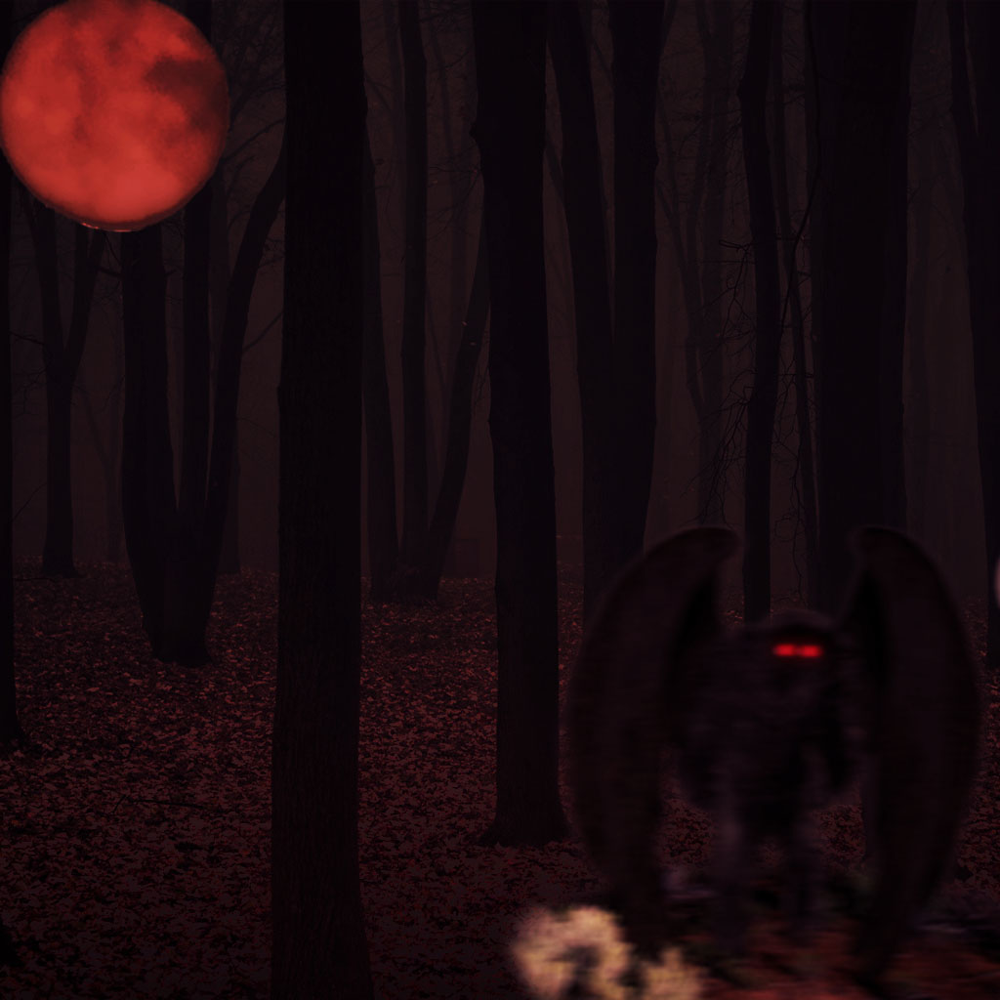

Below shows a police sketch of the type of environment the Demeter would be active in.
The sketch is based on eyewitness accounts of people encountering the Demeter, and where they were at the time of this encounter.
Police believe that Jane Doe may have been in a similar environment at the time of her disappearance.
